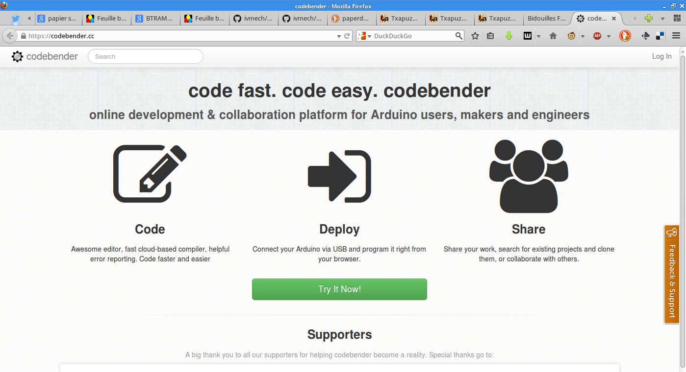
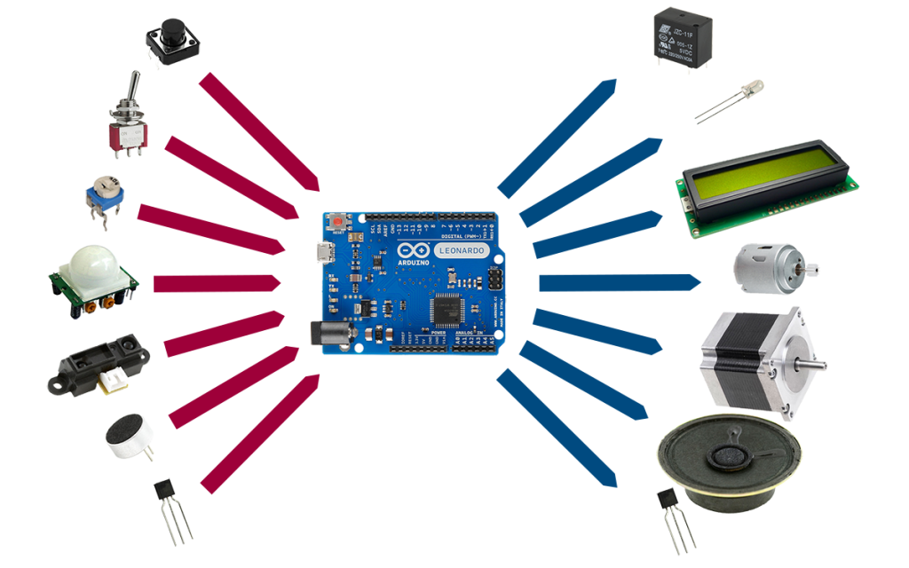
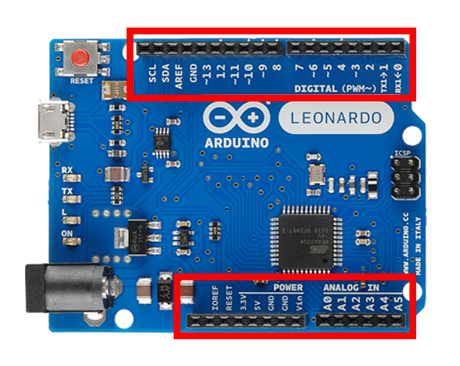
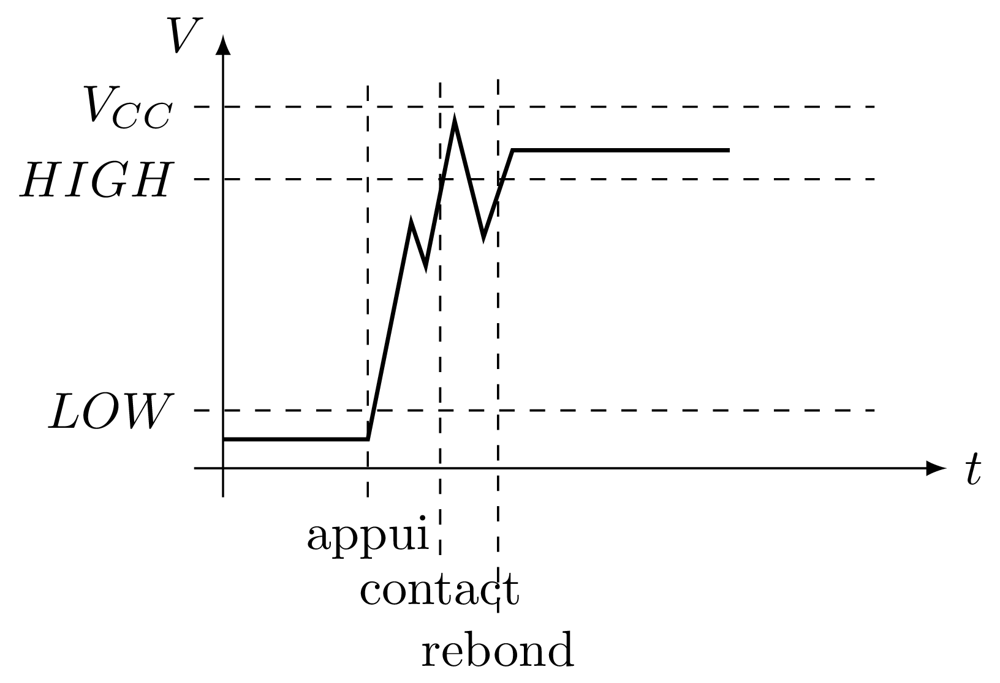

Formation Arduino
Partie 0 : les outils pour programmer !
IDE web
Juste un plug-in à installer dans son navigateur (FF & Chrome/Chromium)
Partie 1 : Bases !
Structure d'un programme
Depuis la version 1 : programmes en .ino
# Déclarations
#define FOO 42 // define, macros #include "stuff.h" // fichier du projet #include <DmxSimple.h> // lib
- évaluées à la compilation (et remplacés)
setup()
void setup() { // init .... }
Initialisation du programme
- déclaration des entrée/sorties (E/S)
- interruptions
- variables globales
- tout pour mettre en marche...
loop()
void loop() { // init .... }
Le programme en lui même : fonction principale.
Elle boucle indéfiniment....
Pour toujours...
loop()Premier programme
void setup() { // init... } void loop() { // programme... }
Un programme (inutile mais) fonctionnel...
Entrées et Sorties Numériques
Sorties Numériques
pinMode()
Une broche peut être en entrée ou sortie...
il faut choisir au démarrage du programme (setup())
void setup() { pinMode(LED_BUILTIN, OUTPUT); } void loop() {}
Constantes
Arduino propose des constantes
- modes
- OUTPUT
- INPUT
- INPUT_PULLUP
- niveaux
- HIGH
- LOW
- des raccourcis...
- LED_BUILTIN
- true
- false
Allumer une LED
lancer un bout d'exo pour allumer la LED
Solution :)
void setup() { pinMode(LED_BUILTIN, OUTPUT); } void loop() { digitalWrite(LED_BUILTIN, HIGH); }
Pour deux instructions...
digitalWrite()
- permet "d'écrire" un niveau logique sur une sortie
- active immédiatement la sortie au niveau demandé
delay(t)
- permet d'attendre un temps t... en millisecondes !
- pendant ce temps là, l'arduino ne fait rien d'autre !
Faire clignoter la LED
... le hello world en électronique...
encore un exo
Solution :)
#define TEMPS 1000 void setup() { pinMode(LED_BUILTIN, OUTPUT); } void loop() { digitalWrite(LED_BUILTIN, HIGH); delay(TEMPS); digitalWrite(LED_BUILTIN, LOW); delay(TEMPS); }
Boucles simples
Conditions
- Tout ce qui n'est pas 0 est vrai
true || true // true true || false // true false || false // false true && true // true true && false // false false && false // false !true // false
distributif, communatif
Variables
- Définir des noms pour y mettre des valeurs :
// premier exemple : l'entier int foo = 42; // pour les autres on verra plus tard.
Opérations, Opérateurs
Maths
= // assignation - + * // vous connaissez... / // division entière % // reste de la division entière -- ++ // décrément/incrément
Logiques
== // égalité != // différent < > // inférieur/supérieur >= <= // inf/sup ou égal
While
Tant que je gagne, je joue ! ― Coluche
while (je gagne) { // je joue } // -- Arduino
- faire quelque chose tant qu'une condition est vraie...
- ou infiniment si la condition est toujours vraie (true)
Faire clignoter une LED 10 fois
Solution
#define NB 10 // nombre de blinks #define TEMPS 1000 // intervales int i; void setup() { pinMode(LED_BUILTIN, OUTPUT); i=0; } void loop() { while (i < NB) { digitalWrite(LED_BUILTIN, HIGH); delay(TEMPS); digitalWrite(LED_BUILTIN, LOW); delay(TEMPS); i++; } }
Fonctions/Procédures

Concept
- bout de programme désigné par un nom
- peut recevoir des paramètres en entrée
- peut renvoyer une valeur
Variables et fonctions
- les variables définies dans les fonctions ne sont accessible que dedans
- les variables définies en dehors de toute fonction sont accessibles partout
Syntaxe générale
<type de retour> nom_de_la_fonction (type1, param1, etc...) { // code } // pour une procédure (sans retour) void fonction() { // code } // retour d'un entier : int fonction() { // code return un_truc; } // +42 int plus42(int n) { int temp = n+42; return temp; }
Blink en fonction !
Solution
#define LED 13 #define TEMPS 1000 void setup() { pinMode(LED, OUTPUT); } void loop() { blink(); } void blink() { digitalWrite(LED_BUILTIN, HIGH); delay(TEMPS); digitalWrite(LED_BUILTIN, LOW); delay(TEMPS); }
Paramètrer le temps d'allumage
Solution
#define LED 13 #define TEMPS 500 void setup() { pinMode(LED, OUTPUT); } void loop() { blink(TEMPS); } void blink(int temps) { digitalWrite(LED_BUILTIN, HIGH); delay(temps); digitalWrite(LED_BUILTIN, LOW); delay(temps); }
Conditionnelles
Et si ?
if (condition) { // fait un truc }
Et sinon ?
if (condition) { // fait un truc } else { // sinon... // ou un autre }
On (en)chaine !
if (condition A) { // truc A } else if (condition B) { // truc B } else { // sinon // truc C }
Entrées numériques
(digital chez les anglais...)
Généralités
- mêmes ports que les sorties numériques
- choix de la "fonction" entrée avec pinMode et INPUT
- l'entrée à deux niveaux : HIGH et LOW
INPUT_PULLUP ?

Permet de mettre une entrée au niveau haut si l'interrupteur est ouvert !
Sur Arduino la résistance de pull-up est interne. Sur certains microcontrôlleurs, on peut aussi choisir d'activer un pull-down.
Exemples
void setup() { pinMode(5,INPUT); // input standard pinMode(6, INPUT_PULLUP); // entrée "tirée" }
Push-to-blink
La LED clignote si le bouton est enfoncé !
Solution
#define BP 2 // bp sur l'entrée 2 #define TEMPS 250 void setup() { pinMode(LED_BUILTIN, OUTPUT); pinMode(BP, INPUT_PULLUP); } void loop() { if (!digitalRead(BP)) { blink(TEMPS); } } void blink(int temps) { digitalWrite(LED_BUILTIN, HIGH); delay(temps); digitalWrite(LED_BUILTIN, LOW); delay(temps); }
Double blink
Deux boutons activent la LED, à deux fréquences différentes.
Solution
// TODO
Toggle-to-shine
Un première appui allume la LED, un second l'éteint.
Solution
const int PB_PIN = 2; // BP connecté pin 2 const int LED_PIN = 13; // onboard LED on pin 13 boolean ledOn = false; // Drapeau de l'etat de la LED void setup() { // Configuration des broches d'E/S pinMode(PB_PIN, INPUT_PULLUP); // internal pull-up pinMode(LED_PIN, OUTPUT); } void loop() { if (digitalRead(PB_PIN) == LOW) { // on change l'etat de la led ledOn = !ledOn; digitalWrite(LED_PIN, ledOn); } }
Seulement, ça ne marche pas très bien... pourquoi ?
Anti-rebond
Problème : comment prendre en compte seulement le premier contact ?
const int PB_PIN = 2; // BP connecté pin 2 const int LED_PIN = 13; // onboard LED sur pin 13 const int TRANSIENT_PERIOD = 10; // Période transitoire (ms) boolean transientPeriodStarted = false; // Drapeau "début du basculement du BP" boolean ledOn = false; // Drapeau "état de la LED" // indicateur de traitement du basculement de bouton débuté boolean bPressAccepted = false; // Pour enregistrer le temps de demarrage du basculement unsigned long timeRef = 0; void setup() { // Configuration des broches d'E/S pinMode(PB_PIN, INPUT_PULLUP); // internal pull-up pinMode(LED_PIN, OUTPUT); } void loop() { if (digitalRead(PB_PIN) == LOW) { if (!transientPeriodStarted) { // si c'est le 1er passage a Zero transientPeriodStarted = true; //on l'indique timeRef = millis(); // et on prend la reférence de temps } // si la periode du délais d'attente est passée // et que le BP n'est pas encore considéré comme appuyé else if (!bPressAccepted && (unsigned long)(millis() - timeRef) > TRANSIENT_PERIOD) { ledOn = !ledOn; // on change l'etat de la led digitalWrite(LED_PIN, ledOn); bPressAccepted = true; // et on enregistre l'appuis sur le BP } } else { // BP relaché -> on remet a 0 tout les indicateurs transientPeriodStarted = false; bPressAccepted = false; } }
Plus simple ?
Le code est lourd non ?
Il doit y avoir plus simple...
Interruptions
Concept
- Permet de prendre en compte immédiatement un évènement.
- On attache une routine d'interruption à une entrée...
- Sur Arduino, on a le choix entre les entrées 2 et 3 : on les appelle 0 et 1...
- On utilise la fonction attachInterrupt(pin, routine, mode)
- 4 modes différents :
- LOW
- CHANGE : trig. à chaque changement de niveau
- RISING : trig. sur front montant
- FALLING : trig. sur front descendant
- on ne peut utiliser que des variables volatile
"Les variables partagées entre les fonction standard et les ISR (Routine de service d'interruption) doivent être déclarées "volatile". Cela explique au compilateur que ce genre de variable peut changer à tout moment et qu'il doit la recharger à chaque fois quelle est référencée, plutot que de se contenter d'une copie trouvée dans un registre processeur."
Interruptions : Exemple
int pin = 13; volatile int state = LOW; void setup() { pinMode(pin, OUTPUT); attachInterrupt(0, blink, CHANGE); } void loop() { digitalWrite(pin, state); } void blink() { state = !state; }
Simple non?